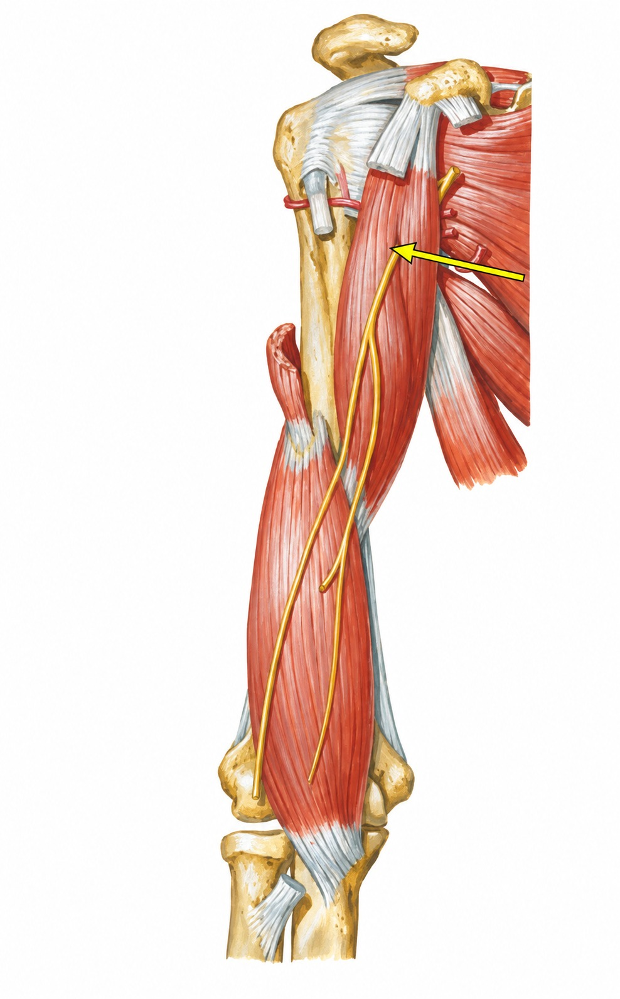

Questão 1 de 14
OrtoQuestões Simulados
Gabarito e comentário completo
Gabarito: D
O coracobraquial parte do processo coracoide e termina na porção média do úmero. Na exposição profunda, ele aparece proximal ao braquial, com o bíceps seccionado. O nervo musculocutâneo penetra seu ventre antes de seguir entre bíceps e braquial.
Sua inserção no úmero explica por que a ação descrita é sobre o braço: flexão e adução. Diferentemente do bíceps e do braquial, ele não termina em um osso do antebraço. Essa diferença entre braço e antebraço evita atribuir a todos os músculos anteriores a mesma função.
D: flexão e adução do braço. A seta identifica o coracobraquial. Suas fixações no coracoide e no úmero o distinguem do braquial, mais distal, e do bíceps, que segue até o rádio.
Alternativa A
É a ação do braquial. Ele ocupa o plano anterior distal do úmero e se insere na ulna. O coracobraquial fica mais proximal e termina no próprio úmero.
Alternativa B
Corresponde ao tríceps. O tríceps ocupa o compartimento posterior e termina no olécrano. A figura é uma exposição anterior, com o alvo junto ao coracoide.
Alternativa C
É uma ação do bíceps. Sua inserção na tuberosidade radial associa esse músculo à supinação e à flexão do antebraço. O coracobraquial não tem inserção radial.
Netter, Atlas de Anatomia Ortopédica, 2ª edição, seção Braço: músculos, nervos e artérias.